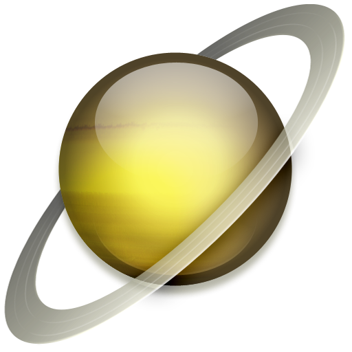

Знайомство із Сонячною системою

Сонце

Меркурій

Венера

Земля

Місяць

Марс

Юпітер

Сатурн

Уран

Нептун

Плутон
Плутон
Ця планета названа на честь грецького бога підземного царства. Відстань до Сонця — 5896,9 млн. кілометрів.

Плутон був описаний як «сніжна грудка» — суміш замерзлого метану і аміаку з температурою на поверхні — 237 °С. Атмосфери у Плутона нема. Це найменша планета Сонячної системи — розміром із земний Місяць. Орбіта Плутона не постійна і інколи заходить на орбіту Нептуна. Наприклад, у період між 1979 і 1999 роками Нептун був зовнішньою планетою Сонячній системі, а не Плутон.
Плутон так повільно обертається навколо своєї осі, що один день дорівнює шести денним і ще 9 годин 18 хвилин. Під час плутонового дня Сатурн з'являється на його небі як яскрава зірка, адже під час присмеркового дня видні лише зорі в небі Плутона. Цій планеті потрібно 250 земних літ, щоб зробити один оберт навколо Сонця.
У 1978 р. відкрито єдиний супутник — Харон, який вдвічі менший самого Плутона.
Періоди обертань Харона і Плутона співпадають, тому супутник ніколи не сходить і не заходить відносно горизонту, він спостерігається як вічно висячий у небі на одному місці. Цей супутник названий на честь перевізника душ померлих у загробний світ.
Вивчаючи темні і світлі візерунки Харона, вчені дійшли висновку, що він складається в основному з води, льоду і каменю з невеликою кількістю метану або без нього. Можливо, колись на Хароні, як і на Плутоні, був метан, але потім зник, оскільки у Харона дуже слабка гравітація. Гравітаційне притягання Плутона — близько 1/10 від сили земної гравітації.
Астрономи дуже зацікавлені у вивченні Плутона і Харона, оскільки ними висунута версія про те, що ця планета і супутник мають ранню стадію розвитку усіх планет нашої Сонячної системи. І чим більше ми дізнаємося про відношення між Плутоном і його супутником, тим більше дізнаємося про всі планети, включаючи і нашу.